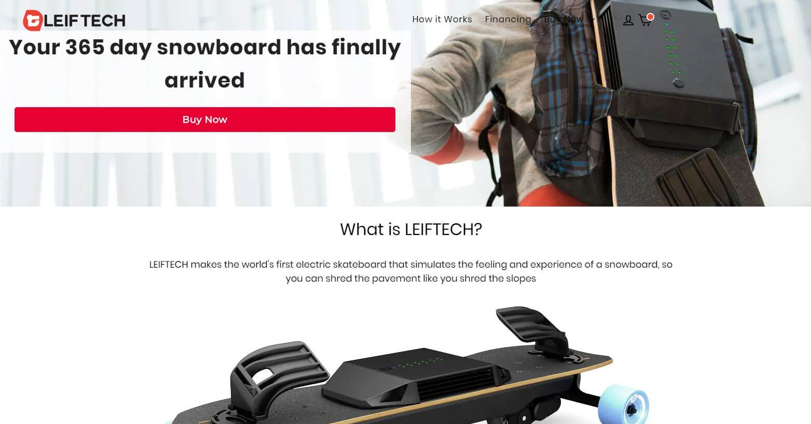

Usability Testing?
I have talked a lot about the importance of usability in creating a website the last few times. While it is useful to see the strengths and weakness’ of other sites we ultimately want to know how to make our own better. The best method for doing so? Usability Testing. Steve Krug makes a great point that the benefits of this process are fantastically efficient yet surprisingly simple. It only requires a simple script and the site you’re testing to get useful results.
To try this out myself I found a website for a product I’ve been interested in for a while: Leiftech. As a small niche company with a unique product they are still trying to get their business rolling. Over the course of a year their website has changed format 3 times which got me curious, was there something wrong? I set up some basic audio recording software, wrote down a script, and got to work on what I think users might have trouble with.
What Should I test For?
I started out by following Steve Krug’s guide to usability testing in his book “Don’t Make Me Think!”. I would tell my participants that this was a test of the website not them, that my recording was just for me and would not be shared, and that I was looking for honest reactions or opinions. I asked a little about the user’s background to gauge how much they knew about the internet along with their occupation. This was all just to set a baseline for the rest of the test.
What I really wanted to know about Leiftech’s website was if it was working as intended. I figured as a small business the main goal was to get you interested in buying their product. They would also want to make sure that learning about what they offered was clear to hopefully convince people on the fence. As this was their main site they would also want to offer support to existing customers with issues. I turned these goals into the following tasks I would have my users run through:
- “Let’s say you saw an ad for Leiftech and wanted to learn more about what they offered. Explore the site and see if you can identify what they offer and how it works.”
- “You have decided to buy one (for yourself or as a gift) that meets your needs. Go through the process of purchasing one online.”
- “If you already had a board but needed a new battery. How would you buy a new one? What If it was under warranty?”
I also asked my users their opinion on the homepage to see if it got the main idea across.
Expect the Unexpected
I had 3 volunteers for my tests: Dede, a middle aged insurance specialist. Kayla, a young travel advisor. And David, an older satellite engineer. Each of them had used the web for both work and home use but to different ratios; kayla used it more recreationally while Dede used it primarily for work. Their online interests were all varied a fair deal though. Comparing their results made some issues very clear for me.
Let's start with the similarities. All 3 of them thought the home page looked professional and clean. They thought that the site was easy to navigate and intuitive but had some minor issues in some spots. However, the big picture was not very clear.
However, the big picture was not very clear. The photo of the board on the home page gave them the impression that the product was just a normal skateboard. The lack of any sort of explaining text as to what made it different meant that none of them quite understood what was being sold. It was on average about 10 minutes into exploring the site that the participants even realized that the skateboard was electric. This is a huge oversight in my opinion; It should be the #1 priority of the home page to get the main idea across.

 Some of the videos on Leiftech’s website
Some of the videos on Leiftech’s website
They all loved the explainer videos strewn about the website. It cleared up a lot of confusion for them but also raised more questions. The promotional blurbs and text caused more confusion than I expected which counteracted the videos.
The way each user navigated the website was unique. Dede and Kayla preferred the big links in the middle of the home page while David would search for navbars or menus. To find out more about the device in an attempt to answer the first question the all chose a different path. The “Learn More” page was clicked more often than the “How it Works” page. After visiting the Learn more page there was more questions unanswered for everyone.
Trying to buy one was an easy process for everyone. The page was easy to navigate but the pricing was unclear. The financing option even confused one user into thinking that it was a class to sign up for. Given enough time I think everyone would have figured it out.
Getting a replacement battery was also idiosyncratic. The best resource was the footer rather than the navbar which I believe was due to its visual presence on the site. The main issue between everyone was that the support options were difficult to find. The support link was broken, the chat box was actually an email form, and there was no search function to find things quickly.
Results
The main things I found awry in my testing was enlightening. It seems that leiftech isn’t quite sure how to market their product and keep changing their site in attempt to help. I would make a few key tweaks that I think would solve my test users problems.
- I would make the top Navigation bar more prominent visually. Adding in more links to specific questions or unifying the in page links should help keep things together. Also a search bar would help some users significantly.
- A FAQ or overview of what the leiftech board is should be the first thing that users encounter. I got the feeling that most people aren’t going to understand what the page is about. Getting the gist across is absolutely crucial.
- Support for existing users should be more prominent, not buried in the footer. Contact information and similar materials are not easy to find when I had my users look for them.